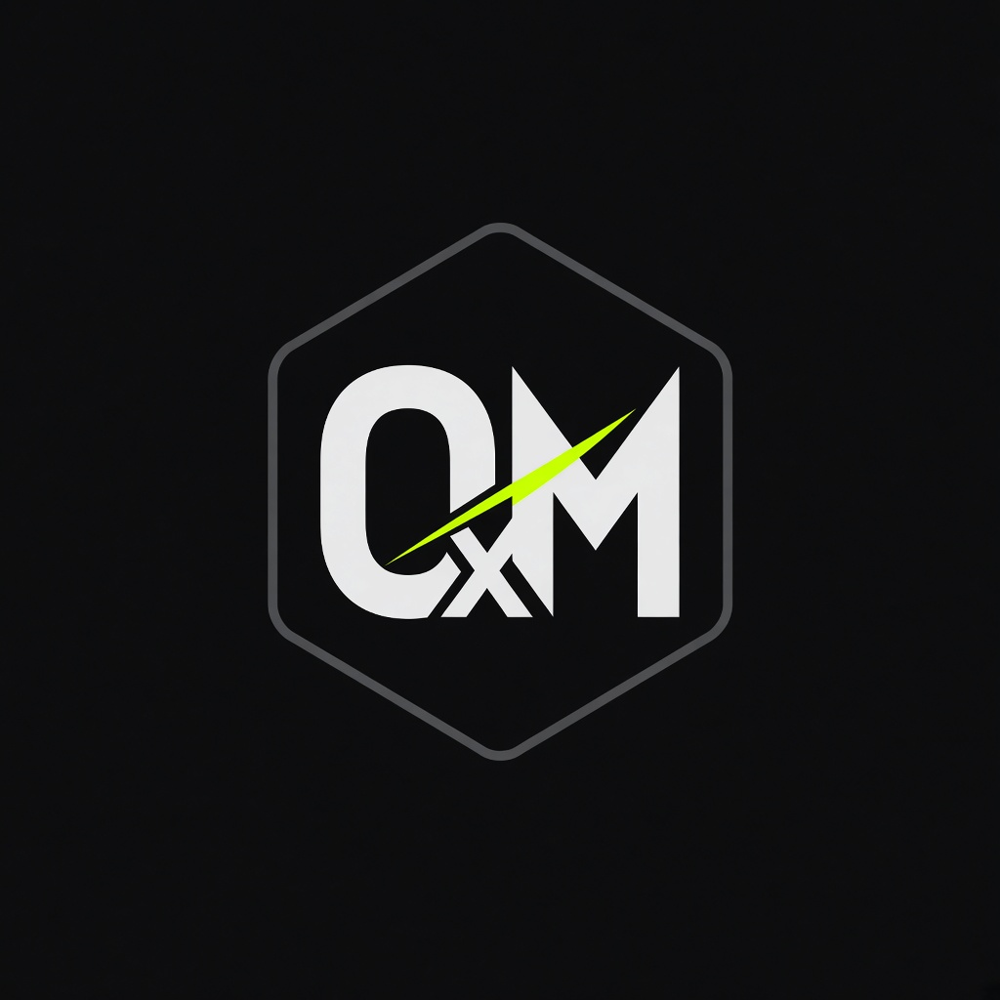

Atlas
Digital asset operations. Python domain, Go notify, operator UI, agents on local models.

0xMiller Labs · personal engineering lab
Senior Backend Engineer. Distributed systems, local-first agents, Web3 infrastructure.
Python Go Ollama vLLM FastAPI Kafka EVM
Digital asset operations. Python domain, Go notify, operator UI, agents on local models.
Backend performance lab. Hypotheses, p50/p95/p99, cautious conclusions.
Reorg handling, RPC failover, log range split, event listener.
Agent backend: Ollama/vLLM first, MCP-shaped tools, Atlas portfolio/intent tools, durable runs.